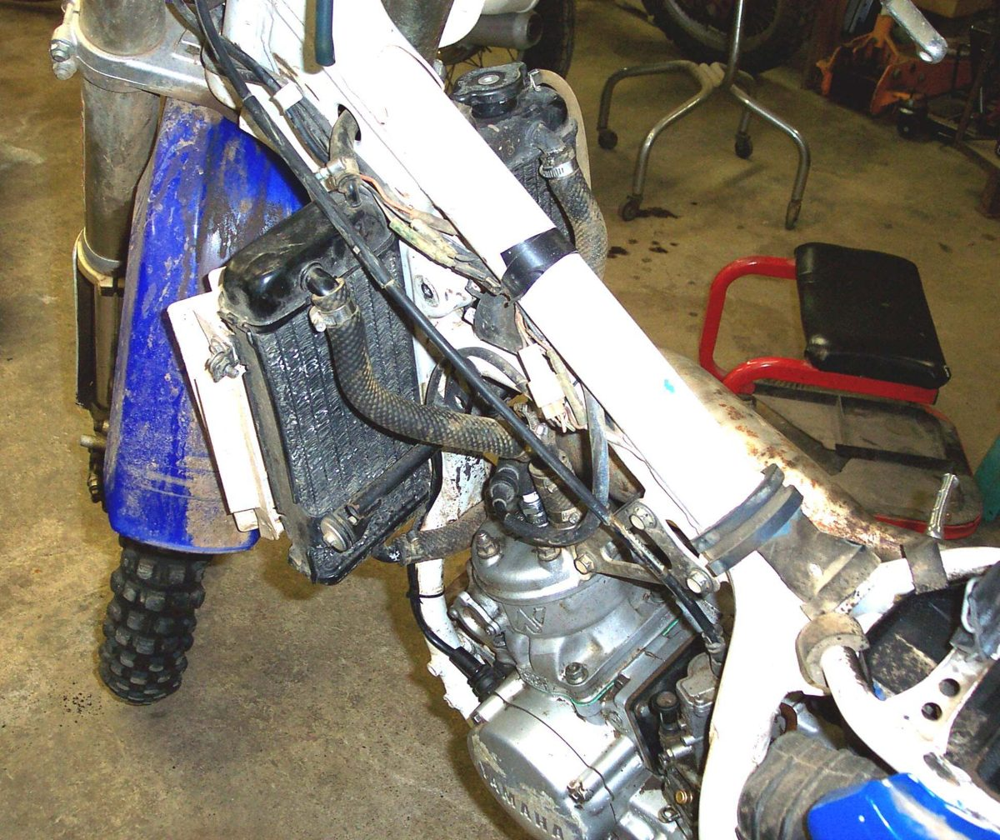

The radiator is a grid of thin tubes and fins. Air passing through takes heat from the coolant inside. Stones, mud, insects, plastic bags and pressure washing bend the fins or block the gaps. A fall can crush or crack it. Inside, old coolant can leave scale that narrows the tubes. A partly blocked radiator causes overheating in hot weather or slow traffic; a cracked one leaks.
Is it safe to ride?
Yes with care if it is not leaking and the temperature stays normal. Do not ride if it leaks, if the fan blade hits the core, or if the temperature climbs.
Quick checks first
- Look at the front of the radiator: mud, insects, plastic, bent fins?
- Wet spots or crust on the core or seams?
- Is the guard or mount bent after a fall?
- Coolant level when cold.
Diagnose it step by step
1Is the radiator wet, or is coolant crust visible on it? Check with Find a coolant leak.
- Yes: the core or a seam is leaking. Small leaks can sometimes be repaired by a radiator shop; otherwise replace. Do not ride far; go to Coolant is leaking.
- No: go to step 2.
2Is the front of the core blocked with mud, insects or debris?
- Yes: clean it cold. Soak with soapy water, then rinse gently from the back (engine side) toward the front with low pressure. A pressure jet bends the fins.
- No: go to step 3.
3Are large areas of fins bent flat?
- Yes: straighten them gently with a fin comb or a thin flat plastic tool, one row at a time. Do not puncture the tubes. If more than a large part of the face is flat, the radiator may need replacing.
- No: go to step 4.
4After a fall: is the radiator pushed back, its mounts bent, or the fan touching the core?
- Yes: workshop. A radiator touching the fan or the frame can wear through. See The bike has been dropped or crashed.
- No: go to step 5.
5Does the engine still overheat with a clean radiator, correct coolant and a working fan? Test the fan with Test the radiator fan and its switch.
- Yes: the inside may be scaled up. Flush and refill with Replace the coolant. If this does not help, a radiator shop can test flow.
- No: done. Fit a radiator guard if you ride on gravel roads.
Causes, most likely first
| Cause | How to confirm | Fix |
|---|---|---|
| Mud, insects, debris | Visible on the face | Clean gently from behind |
| Bent fins | Flattened areas | Straighten with a fin comb |
| Stone or crash damage, leak | Wet core, crust | Find a coolant leak |
| Internal scale | Overheats with clean face | Replace the coolant |
| Bent mounts, fan contact | After a fall | Workshop |